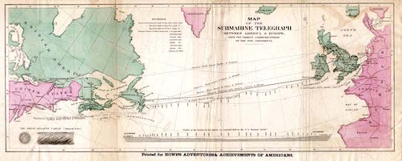
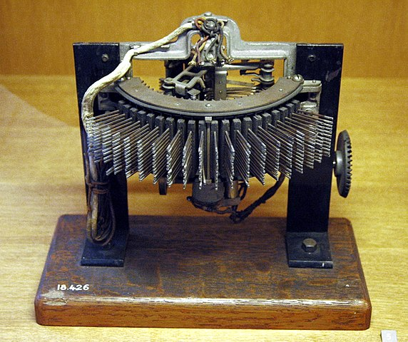
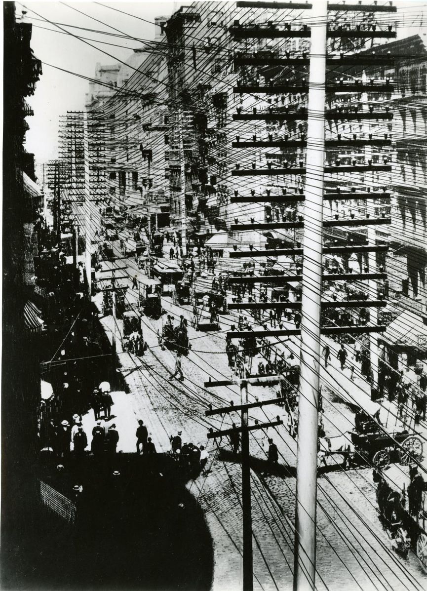
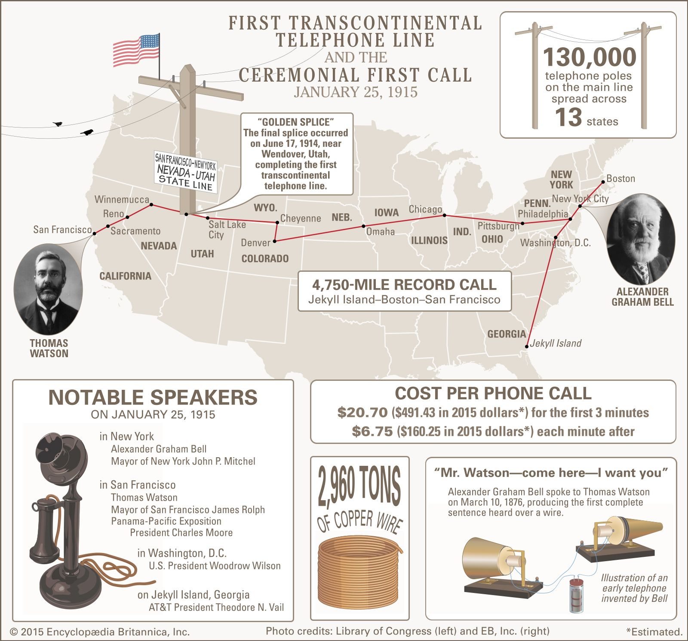
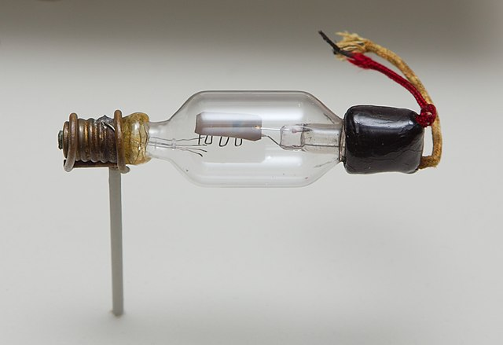
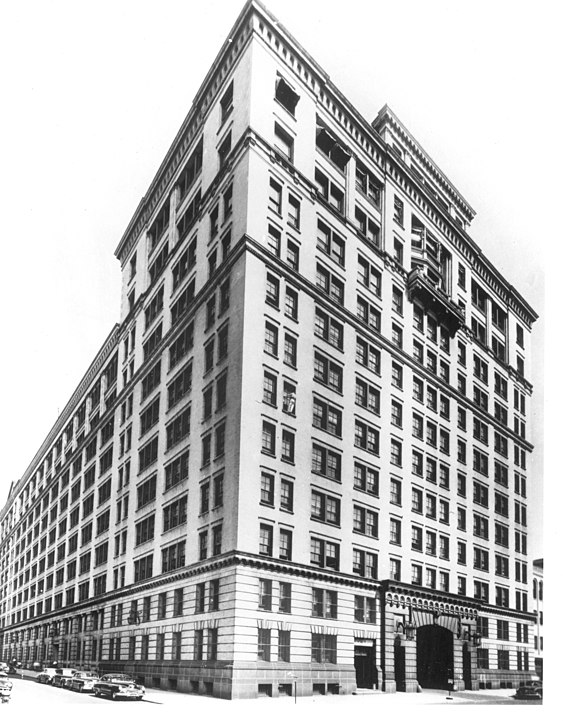
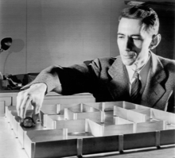
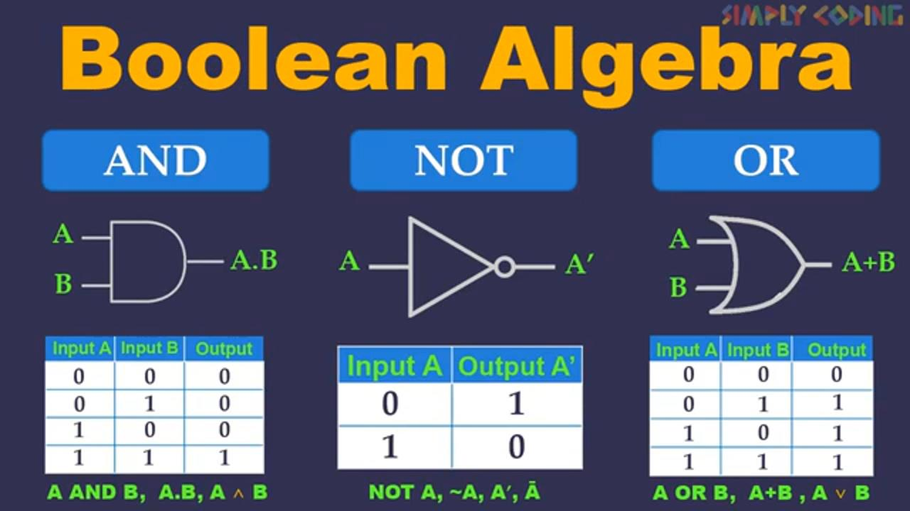
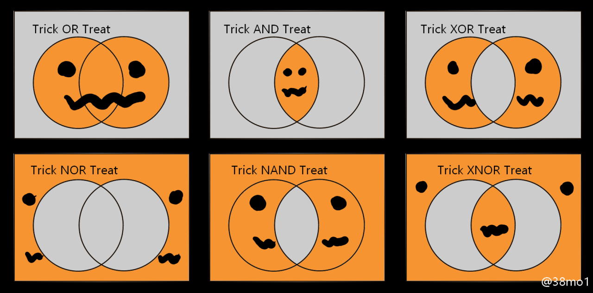

<!DOCTYPE html>
<html lang="en">
  <head>
    <meta charset="utf-8" />
    <meta name="viewport" content="width=device-width, initial-scale=1.0, maximum-scale=1.0, user-scalable=no" />

    <title></title>
    <link rel="stylesheet" href="dist/reveal.css" />
    <link rel="stylesheet" href="dist/theme/simple.css" id="theme" />
    <link rel="stylesheet" href="plugin/highlight/zenburn.css" />
	<link rel="stylesheet" href="css/layout.css" />
	<link rel="stylesheet" href="plugin/customcontrols/style.css">


    <script defer src="dist/fontawesome/all.min.js"></script>

	<script type="text/javascript">
		var forgetPop = true;
		function onPopState(event) {
			if(forgetPop){
				forgetPop = false;
			} else {
				parent.postMessage(event.target.location.href, "app://obsidian.md");
			}
        }
		window.onpopstate = onPopState;
		window.onmessage = event => {
			if(event.data == "reload"){
				window.document.location.reload();
			}
			forgetPop = true;
		}

		function fitElements(){
			const itemsToFit = document.getElementsByClassName('fitText');
			for (const item in itemsToFit) {
				if (Object.hasOwnProperty.call(itemsToFit, item)) {
					var element = itemsToFit[item];
					fitElement(element,1, 1000);
					element.classList.remove('fitText');
				}
			}
		}

		function fitElement(element, start, end){

			let size = (end + start) / 2;
			element.style.fontSize = `${size}px`;

			if(Math.abs(start - end) < 1){
				while(element.scrollHeight > element.offsetHeight){
					size--;
					element.style.fontSize = `${size}px`;
				}
				return;
			}

			if(element.scrollHeight > element.offsetHeight){
				fitElement(element, start, size);
			} else {
				fitElement(element, size, end);
			}		
		}


		document.onreadystatechange = () => {
			fitElements();
			if (document.readyState === 'complete') {
				if (window.location.href.indexOf("?export") != -1){
					parent.postMessage(event.target.location.href, "app://obsidian.md");
				}
				if (window.location.href.indexOf("print-pdf") != -1){
					let stateCheck = setInterval(() => {
						clearInterval(stateCheck);
						window.print();
					}, 250);
				}
			}
	};


        </script>
  </head>
  <body>
    <div class="reveal">
      <div class="slides"><section  data-markdown><script type="text/template"><!-- .slide: class="drop" -->
<div class="" style="position: absolute; left: 0px; top: 0px; height: 700px; width: 960px; min-height: 700px; display: flex; flex-direction: column; align-items: center; justify-content: center" absolute="true">

## how business shennanigans gives rise to information theory
</div></script></section><section  data-markdown><script type="text/template"><!-- .slide: class="drop" -->
<div class="" style="position: absolute; left: 0px; top: 0px; height: 700px; width: 960px; min-height: 700px; display: flex; flex-direction: column; align-items: center; justify-content: center" absolute="true">



By the end of the 19th century, 'networks' were not a novel idea
</div>

<aside class="notes"><p>the concept of a network was not novel, by the end of the 19th century</p>
<ul>
<li>telegraph network.</li>
<li>rail network</li>
<li>gas network</li>
<li>water network</li>
<li>sewer networks</li>
<li>(electrical networks not yet)</li>
</ul>
</aside></script></section><section  data-markdown><script type="text/template"><!-- .slide: class="drop" -->
<div class="" style="position: absolute; left: 0px; top: 0px; height: 700px; width: 960px; min-height: 700px; display: flex; flex-direction: column; align-items: center; justify-content: center" absolute="true">

Bell:
<small>
> In a similar manner, it is conceivable that cables of telephone wires could be laid underground, or suspended overhaed, communicating by branch wires with private dweelings, country houses, shops, manufactories... uniting them through the main cable with a central office where the wires could be connected as desired, establishing direct communication between any two places... I believe, in the future, wires will unite the head offices of the Telephone Company in different cities, and a man ...may communicate by word of mouth with another in a distant place.

(prospectus for prospective investors)

</small>
</div></script></section><section  data-markdown><script type="text/template"><!-- .slide: class="drop" -->
<div class="" style="position: absolute; left: 0px; top: 0px; height: 700px; width: 960px; min-height: 700px; display: flex; flex-direction: column; align-items: center; justify-content: center" absolute="true">

- First Bell company founded 1875
- First telephone exchange operated by Western Union's telephone subsidery
- First woman central office operator: 1878, Emma Nutt
- Idea of assigning unique numbers to subscribers suggested in 1879
</div>

<aside class="notes"><ul>
<li>bell&#39;s vision of point to point, rather than pairs, is becoming the norm</li>
</ul>
</aside></script></section><section  data-markdown><script type="text/template"><!-- .slide: class="drop" -->
<div class="" style="position: absolute; left: 0px; top: 0px; height: 700px; width: 960px; min-height: 700px; display: flex; flex-direction: column; align-items: center; justify-content: center" absolute="true">

>'I would like to say right here... what our experience has been with young ladies' help; the service is very much superior to that of boys and men. They are steadier, do not drink beer and are always on hand'.
</div></script></section><section  data-markdown><script type="text/template"><!-- .slide: class="drop" -->
<div class="" style="position: absolute; left: 0px; top: 0px; height: 700px; width: 960px; min-height: 700px; display: flex; flex-direction: column; align-items: center; justify-content: center" absolute="true">

The Strowger automatic exchange - 1892


Slightly later model depicted
</div>

<aside class="notes"><ul>
<li>so the story goes: a Kansas City undertaker, develops the exchange because &#39;corrupt&#39; telephone operators were directing traffic to his competitors (wife of his competitor worked in the exchange).</li>
<li>Western Electric buys the rights in 1916: just because a device is invented, doesn&#39;t mean it has any immediate impact</li>
<li>early telephone &#39;behaviour&#39; - companies not certain that public would accept doing the work themselves (ie dialing, thus using/needing the automatic exchange). Bell only starts rolling out automatic exchanges in 1919</li>
</ul>
</aside></script></section><section  data-markdown><script type="text/template"><!-- .slide: class="drop" -->
<div class="" style="position: absolute; left: 0px; top: 0px; height: 700px; width: 960px; min-height: 700px; display: flex; flex-direction: column; align-items: center; justify-content: center" absolute="true">

- First two decades of telephony - very slow uptake 
	(remember, I'm talking US most of the time unless I say otherwise. Good research question for you: what's the situation in Canad?)
- subject to interference from other electrical sources - trolleys, telegraph wires, thunderstorms
</div>

<aside class="notes"><ul>
<li>but economics are changing. Hubbard initially uses a rental model, for pairs of phones.</li>
<li>but when phones are bought individually, you need capital to maintain the exchanges<ul>
<li>more phones creates more value for the user, but at more cost to the provider, and less profit per new subscriber</li>
</ul>
</li>
<li>also: all those legal battles over who has precedence, who has what rights, control and monopoly. Hubbard goes to Boston (centre of financial capital) for help</li>
</ul>
</aside></script></section><section  data-markdown><script type="text/template"><!-- .slide: class="drop" -->
<div class="" style="position: absolute; left: 0px; top: 0px; height: 700px; width: 960px; min-height: 700px; display: flex; flex-direction: column; align-items: center; justify-content: center" absolute="true">

'National Bell' becomes 'American Bell'

Upshot:
- Hubbard & Bell are out
- Theodore Vail remains
- The agreement with Western Union still in force
</div>

<aside class="notes"><p>Remember that agreement? They&#39;re paying WU for its telephone business. Vail&#39;s strategy is to buy back control of all the little companies that the previous Bell company had licensed out, the &#39;local bells&#39;.  The idea is this will enable Bell to establish long distance telephone lines</p>
</aside></script></section><section  data-markdown><script type="text/template"><!-- .slide: class="drop" -->
<div class="" style="position: absolute; left: 0px; top: 0px; height: 700px; width: 960px; min-height: 700px; display: flex; flex-direction: column; align-items: center; justify-content: center" absolute="true">

Which breaks the agreement.

- 1884 American Bell estalishes long distance line between NY & Boston. 
- Creates a subsidiary company to do this: American Telephone & Telegraph Company
- establishes a laboratory to improve long distance telephony
</div>

<aside class="notes"><p>&#39;telegraph&#39; because when it was incorporated - which took a legal statute - the NY legislature understood long distance as equivalent to telegraphy</p>
<ul>
<li>first project: &#39;loading coils&#39; - a kind of repeater, prserves vibration &amp; resonance of original signal</li>
</ul>
</aside></script></section><section  data-markdown><script type="text/template"><!-- .slide: class="drop" -->
<div class="" style="position: absolute; left: 0px; top: 0px; height: 700px; width: 960px; min-height: 700px; display: flex; flex-direction: column; align-items: center; justify-content: center" absolute="true">

- 1888 - all the court battles around the original patents are won by Bell
- Bell is making money hand over fist, even though rest of the economy is in depression
- Too bad the patents just won were about to expire
</div>

<aside class="notes"><ul>
<li>the patents expired in 1893 &amp; 1894. Which means that other telephone companies can set up, design their own equipment borrowing extensively from Bell&#39;s designs etc.</li>
<li>the long distance play was Vail&#39;s strategy for coping with the loss of the income that went with controlling the patents.</li>
<li>Despite all this, its commanding lead, its enormous profits, Bell&#39;s system only extended as far as Chicago, leaving the rest of the continent wide open</li>
</ul>
</aside></script></section><section  data-markdown><script type="text/template"><!-- .slide: class="drop" -->
<div class="" style="position: absolute; left: 0px; top: 0px; height: 700px; width: 960px; min-height: 700px; display: flex; flex-direction: column; align-items: center; justify-content: center" absolute="true">

- Independents appear; Bell fights them with both legitimate & spurious court cases
- cuts rates ridiculously where there is competion
- refuses to interconnect to other systems
- buys up stocks of competitors
</div></script></section><section  data-markdown><script type="text/template"><!-- .slide: class="drop" -->
<div class="" style="position: absolute; left: 0px; top: 0px; height: 700px; width: 960px; min-height: 700px; display: flex; flex-direction: column; align-items: center; justify-content: center" absolute="true">


(Daniel Salgado, unsplash)
</div></script></section><section  data-markdown><script type="text/template"><!-- .slide: class="drop" -->
<div class="" style="position: absolute; left: 0px; top: 0px; height: 700px; width: 960px; min-height: 700px; display: flex; flex-direction: column; align-items: center; justify-content: center" absolute="true">


</div>

<aside class="notes"><ul>
<li>by turn of the century, almost half of towns with &gt; 4000 people had:<ul>
<li>two telephone companies</li>
<li>two separate telephone exchanges</li>
<li>often two distinct phones in the home, to cope</li>
<li>photon new york c 1903</li>
<li>class distinction emerging: business, wealthy on Bell system have access to the AT&amp;T longlines, while everyone else is on cheaper, less well connected systems</li>
<li>independents had many fewer subscribers, less well capitalized, comms were bad</li>
</ul>
</li>
</ul>
</aside></script></section><section  data-markdown><script type="text/template"><!-- .slide: class="drop" -->
<div class="" style="position: absolute; left: 0px; top: 0px; height: 700px; width: 960px; min-height: 700px; display: flex; flex-direction: column; align-items: center; justify-content: center" absolute="true">

Cost to subscribe, annually, 1890, dollars


> Washington: 100    ~  New York: 240

>Philadelphia: 250 ~ Chicago: 175

> Paris: 18 ~ Stockholm: 20
</div>

<aside class="notes"><p>in Europe, 1879 onwards, Bell had set up subsidiaries along US model, including the pricing; municipal/national governements often took them over. Result was cheaper rates, more rational organization. Bell only remains in St Petersburg, Moscow, Warsaw: highest prices in europe.</p>
<ul>
<li>Paris, system was state owned; Stockholm, was a users&#39; coop. 5 times as many phones/100 people in Stockholm as were in Washington</li>
<li>When Bell&#39;s patents expired, prices did go down in US; but point is that heavily regulated monopolies elsewhere charged nowhere near as much. Breaks/accelerators are complex!</li>
</ul>
<p>Britain for instance really messed things up;</p>
<p>Court case found that telephones came under heading of telegraphy, thus subject to Post Office;</p>
<p>Post office then gives out licenses <em>and</em> operates as competitor to its own licensees</p>
<p>British post office also did not give licenses to run beyond dec 31 1911, thus slowing down telephone until the 1920s; we&#39;ll see Britain screw things up tech-wise again in the 1960s-70s. </p>
<ul>
<li>a good research question to ask is how did country x respond to the introduction of the telephone; what legal/social issues emerged? in the first few decades of the telephone, universal service (ie, central ownership) seems to achieve better infrastructure, lower rates, if lower penetration, than the situation that emerges in the US. </li>
<li>Which leads the US to experiment with nationalization of the phone lines</li>
</ul>
</aside></script></section><section  data-markdown><script type="text/template"><!-- .slide: class="drop" -->
<div class="" style="position: absolute; left: 0px; top: 0px; height: 700px; width: 960px; min-height: 700px; display: flex; flex-direction: column; align-items: center; justify-content: center" absolute="true">


</div>

<aside class="notes"><ul>
<li><p>invention of the vacuum tube used as repeaters permits long line to west coast (1915)</p>
</li>
<li><p>By 1916 Bell had eliminated competition in 80 pecent of the market</p>
</li>
<li><p>also owned a significant stake of Western Union (by 1912)</p>
</li>
<li><p>which raises the spectre (for Bell) of antiturst legislation</p>
</li>
<li><p>Sherman act was passed in 1890; tries to counter artificial constraints on supply or trade - all the things that Bell was in fact doing throughout the 1890s to cement its position as its patents expired.</p>
</li>
</ul>
</aside></script></section><section  data-markdown><script type="text/template"><!-- .slide: class="drop" -->
<div class="" style="position: absolute; left: 0px; top: 0px; height: 700px; width: 960px; min-height: 700px; display: flex; flex-direction: column; align-items: center; justify-content: center" absolute="true">

Digression


</div>

<aside class="notes"><p>Briefly: the vacuum tube
-a lightbulb is a glass bulb, through which a tungsten filament is passed. Electric current passes through the tungsten, heats it up, and it emits light. To keep it from burning out, you need to have a vacuum in the bulb or a noble gas that doesn&#39;t react.
-a vacuum tube is the same thing, but without the filament. Turns out, electrons can be emitted by the cathode across the gap, the vacuum can transmit electricity. On the other side you have a grid of anodes. Depending on how things are arranged, you can use this to amplify a signal. Thus you can use it in circuits as a valve, forcing the current to travel in one direction. </p>
<ul>
<li>thus we have a device for turning a weak current into a strong current.</li>
</ul>
</aside></script></section><section  data-markdown><script type="text/template"><!-- .slide: class="drop" -->
<div class="" style="position: absolute; left: 0px; top: 0px; height: 700px; width: 960px; min-height: 700px; display: flex; flex-direction: column; align-items: center; justify-content: center" absolute="true">

Back to main thread:

- long distance telephony was central to Bell's plan to survive the expiration of its patents
- seemed also that Bell was directing customers to use telegraph services that it owned/had major stake in
- antitrust legislation, populist politicians, interstate commerce commission: AT&T in the crosshairs
</div>

<aside class="notes"><ul>
<li>an earlier attempt by the attorney general in 1908 had failed; served warning that further consolidation would be trouble</li>
<li>everywhere else, phone systems seemed to be coming under control of government; some US Postmaster General Albert Berelson makes a gambit for control too</li>
<li>Bell, AT&amp;T, Theodore Vail - navigate all this by agreeing that monoplies should be regulated, but &#39;government ownership would be unregulated monopoly&#39;. </li>
<li>AT&amp;T in 1913 agree to make long distance lines available to the smaller local companies to use, and agree to ask permission before acquiring any other companies.</li>
</ul>
<p>WWI - AT&amp;T gets nationalise <em>anyway</em></p>
<ul>
<li>which meant in practice that there was an oversight board created by the government supposedly managed by the post office.</li>
<li>in the first year of &#39;nationalisation&#39; AT&amp;T make $40 million.</li>
<li>rates went <em>up</em></li>
<li>post world war i, nationalisation abandoned. 1921 Graham Act makes the arrangement of 1913 a permanent feature of US telecommunications</li>
<li>a curious feature of this arrangement was that the amount of profit AT&amp;T could take was <em>politically</em> related to the amount in invested in the system. If it was seen to be improving the infrastructure of telephony, then it could earn more.</li>
<li>what was good for Bell was good for the US</li>
</ul>
</aside></script></section><section  data-markdown><script type="text/template"><!-- .slide: class="drop" -->
<div class="" style="position: absolute; left: 0px; top: 0px; height: 700px; width: 960px; min-height: 700px; display: flex; flex-direction: column; align-items: center; justify-content: center" absolute="true">


</div>

<aside class="notes"><ul>
<li>Thus Bell Labs</li>
<li>devoted largely to pure research, as whatever invested there could provide cover for profits elsewhere</li>
<li>by world war II Bell was worth $5 billion</li>
<li>a central concern: how can we pump more signal through the circuits that we have?</li>
<li>researchers there could work on pretty much whatever they wanted to work on. Had an in-house journal for publishing results. </li>
<li>in world war II, turns its vast talents to supporting the war effort while maintaining that research-what-you-want ethos to an important degree</li>
</ul>
</aside></script></section><section  data-markdown><script type="text/template"><!-- .slide: class="drop" -->
<div class="" style="position: absolute; left: 0px; top: 0px; height: 700px; width: 960px; min-height: 700px; display: flex; flex-direction: column; align-items: center; justify-content: center" absolute="true">


</div>

<aside class="notes"><p>Which brings us to Claude Shannon
in the 1930s a graduate student of Vannevar Bush&#39;s at MIT</p>
<ul>
<li>working on <em>analog</em> computers to solve differential equations</li>
<li>joins Bell Labs during WWII, working on fire-control systems</li>
<li>during that time, comes up with information theory</li>
</ul>
<p>an analog computer btw represent continuous quantities of some physical phenomena as a model of the problem to be solved.</p>
</aside></script></section><section  data-markdown><script type="text/template"><!-- .slide: class="drop" -->
<div class="" style="position: absolute; left: 0px; top: 0px; height: 700px; width: 960px; min-height: 700px; display: flex; flex-direction: column; align-items: center; justify-content: center" absolute="true">

**But as an MA student** he pretty much lays out the foundations for modern digital technology:  

1938 *A Symbolic Analysis of Relay and Switching Circuits* ([read it here if you want](https://ieeexplore.ieee.org/abstract/document/6431064))


</div>

<aside class="notes"><p>demonstrates that Boolean Algebra can be represented as an electrical circuit</p>
<p>you&#39;ll most likely have encountered this when trying to frame a decent library or web search</p>
</aside></script></section><section  data-markdown><script type="text/template"><!-- .slide: class="drop" -->
<div class="" style="position: absolute; left: 0px; top: 0px; height: 700px; width: 960px; min-height: 700px; display: flex; flex-direction: column; align-items: center; justify-content: center" absolute="true">


</div>

<aside class="notes"><p>In Boolean algebra, the variabls are truth values, true/false, 1/0, open/close.
operators are conjunction (and), disjunction (or) and negation (not)</p>
<p>Boole developed this as a way to enhance artistotle&#39;s logical thought and to systematize it, the idea that an idea can be expressed as a kind of equation. (1854)</p>
<p>incidentally Shannon&#39;s PhD in mathematics - Bush his supervisor - &#39;An Algebra for Theoretical Genetics&#39;. Joins the institute for advanced study in Princeton in 1940, meets and works with all the giants of 20th century physics and science.</p>
</aside></script></section><section  data-markdown><script type="text/template"><!-- .slide: class="drop" -->
<div class="" style="position: absolute; left: 0px; top: 0px; height: 700px; width: 960px; min-height: 700px; display: flex; flex-direction: column; align-items: center; justify-content: center" absolute="true">


</div></script></section><section  data-markdown><script type="text/template"><!-- .slide: class="drop" -->
<div class="" style="position: absolute; left: 0px; top: 0px; height: 700px; width: 960px; min-height: 700px; display: flex; flex-direction: column; align-items: center; justify-content: center" absolute="true">

<div align="left">
Claude Shannon shows us that electrical circuits *can perform logical operations*

Which opens the door to machines that can read instructions, perform a computation, and change their own rules based on the results of that computation.

That is to say: a digital computer.
</div>
</div>

<aside class="notes"><p>he does that <em>before</em> he joins Bell Labs.</p>
</aside></script></section><section  data-markdown><script type="text/template"><!-- .slide: class="drop" -->
<div class="" style="position: absolute; left: 0px; top: 0px; height: 700px; width: 960px; min-height: 700px; display: flex; flex-direction: column; align-items: center; justify-content: center" absolute="true">

At Bell Labs, he comes up with *information theory*
</div>

<aside class="notes"><p>It emerges out of his work on cryptographic systems, where he also demonstrated an unbreakable system (the one-time pad), and he writes A Mathematical Theory of Communication which appears in the Bell System Technical Journal (a book with same name comes out later and popularizes his findings) 
but let me take a bit of a digression.</p>
</aside></script></section><section  data-markdown><script type="text/template"><!-- .slide: class="drop" -->
<div class="" style="position: absolute; left: 0px; top: 0px; height: 700px; width: 960px; min-height: 700px; display: flex; flex-direction: column; align-items: center; justify-content: center" absolute="true">

<iframe title="vimeo-player" src="https://player.vimeo.com/video/149070596?h=6cfbaad9e7" width="640" height="360" frameborder="0" allowfullscreen></iframe>
</div>

<aside class="notes"><p>have I shown this to you before? If you know the song, you can hear the &#39;signal&#39; in all of that noise: this auditory hallucination effect enables us find the &#39;information&#39;</p>
</aside></script></section><section  data-markdown><script type="text/template"><!-- .slide: class="drop" -->
<div class="" style="position: absolute; left: 0px; top: 0px; height: 700px; width: 960px; min-height: 700px; display: flex; flex-direction: column; align-items: center; justify-content: center" absolute="true">

<iframe width="560" height="315" src="https://www.youtube.com/embed/uWdOfhMyoew" title="YouTube video player" frameborder="0" allow="accelerometer; autoplay; clipboard-write; encrypted-media; gyroscope; picture-in-picture; web-share" allowfullscreen></iframe>
<small>
See also Durojaye, Cecilia, et al. ‘When Music Speaks: An Acoustic Study of the Speech Surrogacy of the Nigerian Dùndún Talking Drum’. _Frontiers in Communication_, vol. 6, 2021. _Frontiers_, [https://www.frontiersin.org/articles/10.3389/fcomm.2021.652690](https://www.frontiersin.org/articles/10.3389/fcomm.2021.652690/full).

[Yoruba linguistic tones](http://www.africa.uga.edu/Yoruba/tones.html)
</small>
</div></script></section><section  data-markdown><script type="text/template"><!-- .slide: class="drop" -->
<div class="" style="position: absolute; left: 0px; top: 0px; height: 700px; width: 960px; min-height: 700px; display: flex; flex-direction: column; align-items: center; justify-content: center" absolute="true">

Redundancy is the key to understanding language.

(it's also why modern large languge models like GPT3 work, but that's a story for another day)
</div>

<aside class="notes"><p>I am <em>not</em> suggesting in any way shape or form that the music of Smash Mouth is meaningful like the Dùndún Talking Drum.</p>
<p>most european languages do not rely on tonal differences; thus for a long time european colonizers could not recognize what they were hearing as language, as information-rich. John F. Carrington one of the first europeans to learn how to drum; published his understanding of how they worked in 1949 in &#39;The Talking Drums of Africa.&#39;</p>
<p>The <em>redundancy</em> of both examples is the key element that ties this all to information theory.</p>
<p>At the same time Carrington was publishing this work, and describing how the drums permitted a redundancy that made clear their meanings, researchers invovled with Bell Telephone were trying to quantify how to deal with the noisiness of their telephone lines. Basically, they found that the fewer symbols or <em>ways of representing the message</em> available for a message, the more of them must be transmitted to get the message across. (Ralph Hartley, H= n log s, H is amount of information ,n the number of symbols in the message, and s the number of symbols in the language) For telephone engineers, &#39;symbols&#39; could be the phonemes of language or the ways an electrical circuit could be completed or interrupted.</p>
</aside></script></section><section  data-markdown><script type="text/template"><!-- .slide: class="drop" -->
<div class="" style="position: absolute; left: 0px; top: 0px; height: 700px; width: 960px; min-height: 700px; display: flex; flex-direction: column; align-items: center; justify-content: center" absolute="true">

<div align = "left">
Claude Shannon in 1948 took this idea to its logical conclusion and developed a way to think about a message as being composed of two things:

- the content
- the information

'Information' is a measurment of the redundancy of that content, or how 'surprising' the next letter/sound/wave/ is. 
</div>
</div>

<aside class="notes"><p>Shannon Entropy is a measure of the uncertainty associated with a random variable. It is used to measure the average amount of information that is needed to identify the value of a random variable. The higher the entropy, the greater the amount of uncertainty or unpredictability. In other words, Shannon Entropy measures the amount of information that is needed to accurately predict the value of a random variable, ie, the next letter in a sentence.</p>
<p>The concept of a bit was introduced at the same time by Shannon and is fundamental to understanding entropy. A bit is a unit of information that has two possible states: 0 or 1. These two states represent the amount of uncertainty or randomness in a system. </p>
<p>For example, if a system has two possible outcomes, such as heads or tails in a coin toss, then the system has one bit of information. The more possible outcomes, the more bits of information, and thus the higher the entropy. Entropy is a fundamental concept in information theory and is used to measure the amount of uncertainty or randomness in a system.</p>
</aside></script></section><section  data-markdown><script type="text/template"><!-- .slide: class="drop" -->
<div class="" style="position: absolute; left: 0px; top: 0px; height: 700px; width: 960px; min-height: 700px; display: flex; flex-direction: column; align-items: center; justify-content: center" absolute="true">

Combine information theory - the division of a message from its meaning - with logical circuits and you get the 20th century.
</div>

<aside class="notes"><p>This is a key insite that emerged at the same time as so many key insights that together enable the digitization of the world. </p>
<p>But this digitization happens in the context of a lot of other things, among them, Alan Turing&#39;s ideas on what can computable (and how), work on representing neural networks as electrical circuits, the rendering of Boolean logic into circuits as well, and a number of other items we&#39;ll look at in due course.</p>
<p>We don&#39;t need to know, as historians, precisely how the maths of this work. Suffice to say, thinking of a message as a function of probability enables a lot of digital technologies.</p>
<p>And it enabled Bell Labs to make long distance telephony clearer, more reliable, and more profitable.</p>
</aside></script></section><section  data-markdown><script type="text/template"><!-- .slide: class="drop" -->
<div class="" style="position: absolute; left: 0px; top: 0px; height: 700px; width: 960px; min-height: 700px; display: flex; flex-direction: column; align-items: center; justify-content: center" absolute="true">


</div>

<aside class="notes"><p>But... what if the message being transmitted wasn&#39;t voice?</p>
<p>*For that, we need some computers.</p>
<p>Tune in next week for Eniac, Maniac, Edvac, and other incunabula of the digital age!*</p>
<p>depicted: the Model K Adder - George Stibbitz at Bell Labs, using telephone relays wired in a boolean circuit to add. 1939.</p>
</aside></script></section></div>
    </div>

    <script src="dist/reveal.js"></script>

    <script src="plugin/markdown/markdown.js"></script>
    <script src="plugin/highlight/highlight.js"></script>
    <script src="plugin/zoom/zoom.js"></script>
    <script src="plugin/notes/notes.js"></script>
    <script src="plugin/math/math.js"></script>
	<script src="plugin/mermaid/mermaid.js"></script>
	<script src="plugin/chart/chart.min.js"></script>
	<script src="plugin/chart/plugin.js"></script>
	<script src="plugin/customcontrols/plugin.js"></script>

    <script>
      function extend() {
        var target = {};
        for (var i = 0; i < arguments.length; i++) {
          var source = arguments[i];
          for (var key in source) {
            if (source.hasOwnProperty(key)) {
              target[key] = source[key];
            }
          }
        }
        return target;
      }

	  function isLight(color) {
		let hex = color.replace('#', '');

		// convert #fff => #ffffff
		if(hex.length == 3){
			hex = `${hex[0]}${hex[0]}${hex[1]}${hex[1]}${hex[2]}${hex[2]}`;
		}

		const c_r = parseInt(hex.substr(0, 2), 16);
		const c_g = parseInt(hex.substr(2, 2), 16);
		const c_b = parseInt(hex.substr(4, 2), 16);
		const brightness = ((c_r * 299) + (c_g * 587) + (c_b * 114)) / 1000;
		return brightness > 155;
	}

	var bgColor = getComputedStyle(document.documentElement).getPropertyValue('--r-background-color').trim();
	var isLight = isLight(bgColor);

	if(isLight){
		document.body.classList.add('has-light-background');
	} else {
		document.body.classList.add('has-dark-background');
	}

      // default options to init reveal.js
      var defaultOptions = {
        controls: true,
        progress: true,
        history: true,
        center: true,
        transition: 'default', // none/fade/slide/convex/concave/zoom
        plugins: [
          RevealMarkdown,
          RevealHighlight,
          RevealZoom,
          RevealNotes,
          RevealMath.MathJax3,
		  RevealMermaid,
		  RevealChart,
		  RevealCustomControls,
        ],


    	allottedTime: 120 * 1000,

		mathjax3: {
			mathjax: 'plugin/math/mathjax/tex-mml-chtml.js',
		},
		markdown: {
		  gfm: true,
		  mangle: true,
		  pedantic: false,
		  smartLists: false,
		  smartypants: false,
		},

		mermaid: {
			theme: isLight ? 'default' : 'dark',
		},

		customcontrols: {
			controls: [
			]
		},
      };

      // options from URL query string
      var queryOptions = Reveal().getQueryHash() || {};

      var options = extend(defaultOptions, {"width":960,"height":700,"margin":0.04,"controls":true,"progress":true,"slideNumber":false,"transition":"fade","transitionSpeed":"default"}, queryOptions);
    </script>

    <script>
      Reveal.initialize(options);
    </script>
  </body>

  <!-- created with Advanced Slides -->
</html>
